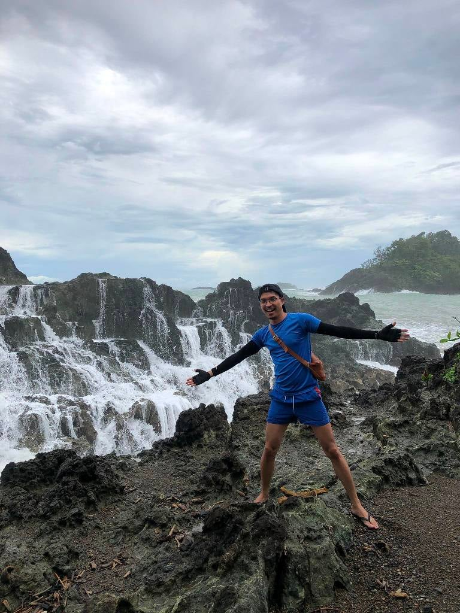

Overview
The site showcases dramatic coastal cliffs, a natural rock arch, and a small inlet perfect for swimming. The dark, smooth pebble beach and clear ocean waters make it ideal for sightseeing, photography, and nature observation.
Masanga Point is a striking coastal landmark in General Nakar, Quezon, featuring a natural rock arch carved over centuries by the Pacific waves. It offers panoramic ocean views and a secluded spot for swimming when the sea is calm.

The site showcases dramatic coastal cliffs, a natural rock arch, and a small inlet perfect for swimming. The dark, smooth pebble beach and clear ocean waters make it ideal for sightseeing, photography, and nature observation.

Masanga Point is located in Barangay Canaway, General Nakar. Visitors can reach the site by road from the town proper, followed by a short walk toward the coast. Motorcycle or private vehicles are recommended for easier access along rugged coastal paths.

Masanga Point features rugged coastal cliffs, a naturally formed rock arch, and a small inlet where calm waves allow for safe swimming. The shoreline consists of smooth dark pebbles and rocks, with panoramic views of the Pacific Ocean. Coastal vegetation adds to the natural charm, making it a perfect spot for photography and nature observation.

Visitors can enjoy sightseeing, swimming when sea conditions are safe, coastal photography, and nature walks along the cliffs. The site has minimal development, so bringing water, sun protection, and personal supplies is recommended. Environmental or access fees may be collected, and local tourism registration may be required.